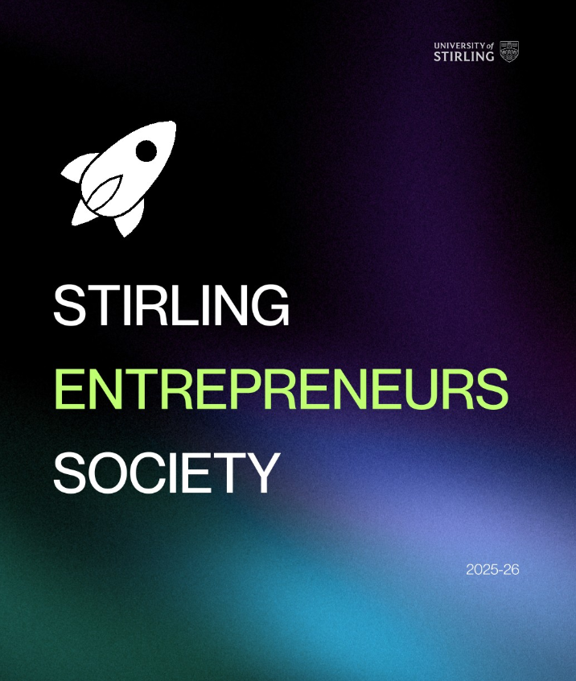

A student-led society at the University of Stirling for founders, builders, and ambitious thinkers. Come along to events, meet collaborators, and turn ideas into something real.

We create a space on campus where students can explore entrepreneurship in a practical, friendly way. You don't need a startup idea, just curiosity and a willingness to learn.
Founder talks, skill workshops, and sessions that teach useful real-world frameworks.
Find co-founders, teammates, or friends who want to build projects and startups.
Low-stakes pitch nights and peer feedback to help you move from idea to action.
Anyone at Stirling who wants to learn, build, or meet ambitious people — from computing and business to design, sports, science, and arts. Entrepreneurship is a mindset, not a degree.
Start with socials and beginner-friendly workshops, we'll guide you.
Come to pitch nights and feedback sessions to accelerate progress.
Attend talks, ask questions, and learn how startups actually work.
Join the society to get event updates, meet members, and access opportunities. We also welcome guest speakers and partnerships.
Join, attend events, and bring a friend — everyone is welcome.
Run a session, share your story, and support new builders on campus.
Sponsor events, mentor students, or co-host something meaningful.